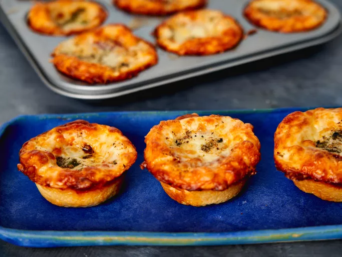

Copycat Crazy Puffs

Description
Learn how to make a copycat version of Little Caesar's Crazy Puffs at home - all the flavors of pepperoni pizza in little bite-sized puffs.
ingredients
- 1 (13.8-ounce) pizza crust (such as Pillsbury)
- 1/3 cup unsalted butter, melted
- 1 tablespoon finely chopped fresh parsley
- 2 teaspoons dried Italian seasoning
- 2 teaspoons garlic salt
- 1/4 teaspoon freshly ground black pepper
- 1 1/2 cups jarred pizza sauce
- 1 1/2 cups pepperoni slices
- 4 cups pre-shredded farmer-style mozzarella cheese
- 1/4 cup freshly grated Parmesan cheese
Steps
- Preheat the oven to 375 degrees F (180 degrees C) Place a baking sheet on the bottom rack oven. Coat a shallow 12 cup muffin tin with cooking spray.
- Roll pizza dough across prepared muffin tin, make sure to stretch dough to cover the entire surface. Using a pizza cutter, cut dough into squares for each muffin tin. Discard any excess dough.
- Press and roll dough squares into each tin and ensure dough comes halfway up the sides of each cup.
- Stir together butter, parsley, Italian seasoning, garlic salt, and black pepper in a small bowl until well combined. Brush butter mixture onto each dough cup.
- Dollop 1 teaspoon pizza sauce into each cup. Layer two slices of pepperoni, add 1 tablespoon cheese overtop, and another 2 slices of pepperoni. Top with another 2 tablespoons of cheese, making sure to press the cheese within each muffin cup. Add Parmesan to butter mixture, and drip butter mix over each puff.
- Bake in the preheated oven until cheese is melted, about 15 minutes. Set oven to broil, and broil until golden brown, about 1 minute. Remove from oven and allow to cool for 2 minutes before serving.